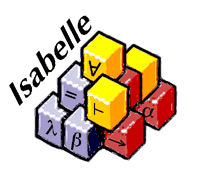

The Sledgehammer in Isabelle

About the Sledgehammer in Isabelle
- Finds proofs in higher-order logic
- Axioms selected from background theory
- Axioms and conjecture translated to FOF/TFF/THF
- Calls ATP systems
- Proofs verified by reconstruction with Metis
Application of ATP
- Supports some ATP systems locally (E, SPASS, Vampire, ...)
- Can also use
RemoteSoT (mostly for SInE and Vampire)
- Problems added to the
TPTP problem library
- RemoteSoT avoids need for local installation of ATP systems
Isabelle is available
online